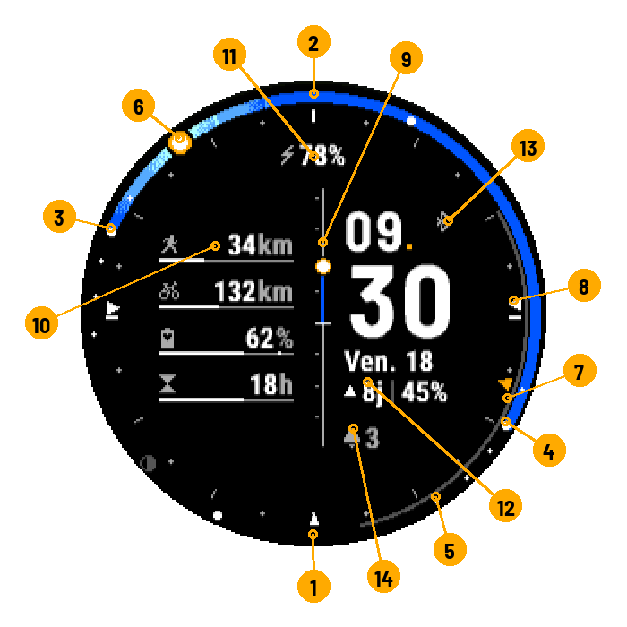

24h Astro
Le ciel de votre journée, d'un coup d'œil. Voir sur Connect IQ
Ce qu'on voit · Données · Paramètres · Montres
Ce qu'on voit

- Minuit
- Midi
- Lever du soleil
- Coucher du soleil
- Nuit noire
- Le soleil, maintenant
- Arc de la lune
- Boussole : direction du lever
- Barre centrale : hauteur du soleil
- Jauges
- Champ du haut
- Date et ligne lune
- Bluetooth, position
- Notifications
L'anneau = 24 h : minuit en bas, midi en haut. La partie colorée va du lever au coucher ; sa couleur suit le ciel du moment (sombre la nuit, bleu vif le jour). Au lever et au coucher, lueur au bout de l'arc ; soleil levé, halo autour de lui. Gros points : lever, coucher, midi et minuit solaires. Petits points : crépuscules et fin de l'heure dorée.
La lune : arc gris de son lever à son coucher ; disque à sa phase, par le haut de l'anneau quand elle est levée, par le bas sinon.
La boussole : triangles sur les graduations, comme une carte (nord en haut). Blancs : directions du lever et du coucher. Orange : le soleil maintenant (contour blanc s'il est couché). Petit triangle en bas : le sud.
La barre centrale : hauteur du soleil ; le trait blanc est l'horizon.
La ligne lune : ▲ 8j │ 47% = pleine lune dans 8 jours, 47 % éclairée ; ▼ = vers la nouvelle lune ; ● / ○ = pleine / nouvelle lune proche, +4h = passée depuis 4 h. Durées en heures sous 48 h.
Barre d'état :  téléphone connecté (gris foncé : non connecté) ·
téléphone connecté (gris foncé : non connecté) ·  aucune position connue, calcul pour Paris (lancer une activité GPS ou saisir une position) ·
aucune position connue, calcul pour Paris (lancer une activité GPS ou saisir une position) ·  en charge ·
en charge ·  notifications.
notifications.
Données
 |
Sport | Cumul distance, durée ou séances ; semaine, mois ou année ; objectif réglable. |
 |
Body Battery | Niveau ; trait blanc = maximum du jour. |
 |
Récupération | Heures restantes ; « Ok » = récupéré. |
 |
Pas | Vers l'objectif de la montre. |
 |
Étages | Vers l'objectif de la montre. |
 |
Minutes intensives | Semaine, vers l'objectif de la montre. |
 |
Fréquence cardiaque | Par zones ; rouge en zone 5. |
 |
Stress | 0 à 100 ; rouge dès 75. |
 |
Calories | Du jour (champ seulement). |
 |
Batterie | % ou autonomie ; rouge sous le seuil, vert en charge. |
Jauge verte : objectif atteint. Rouge : alerte. Piste grise seule ou « -- » : donnée indisponible. Certaines données dépendent du modèle.
Paramètres
Dans l'appli Connect IQ ou Garmin Connect du téléphone.
Page principale
| Réglage | Choix | Par défaut |
|---|---|---|
| Disposition de la colonne gauche | 4 barres, 3 barres, 1 anneau + 2 barres, 2 barres, 2 anneaux, Aucune | 4 barres |
| Séparateur central | Élévation du soleil, Élévation du soleil et de la lune, Élévation de la lune, Batterie, Barre simple | Élévation du soleil |
| Thème | Classique, Soleil, Azur | Classique |
| Dégradés du ciel | Tramés, Paliers nets | Tramés |
| Lune sur le cadran 24 h (arc et disque) | Oui / Non | Oui |
| Boussole sur les graduations (azimuts) | Aucune, Soleil, Lune | Soleil |
| Position manuelle (au lieu du GPS) | Oui / Non | Non |
Jauges 1 à 4
Sport, mesure, période et objectif ne servent que pour la donnée Sport. Seules les jauges utilisées par la disposition s'affichent.
| Réglage | Choix | Par défaut (1 / 2 / 3 / 4) |
|---|---|---|
| Donnée | Sport, Récupération, Body Battery, Pas, Minutes intensives, Étages, Fréquence cardiaque, Stress | Sport / Sport / Body Battery / Récupération |
| Sport | Tous sports, Course, Vélo, Marche, Randonnée, Natation, Vélo électrique, Ski de fond, Aviron, Roller, Paddle, Kayak, Raquettes | Course / Vélo / Tous sports / Tous sports |
| Mesure | Distance, Durée, Séances | Distance / Distance / Distance / Distance |
| Période | Semaine, Mois, Année | Mois / Mois / Mois / Mois |
| Objectif | 0 – 100000 | 100 / 300 / 0 / 0 |
Coordonnées
Utilisées seulement si la position manuelle est activée.
| Réglage | Choix | Par défaut |
|---|---|---|
| Latitude | -90 – 90 | 48,8567 |
| Longitude | -180 – 180 | 2,3508 |
Champs de texte
Contenu des quatre champs autour de l'heure.
| Réglage | Choix | Par défaut |
|---|---|---|
| Champ haut / Champ bas / Ligne 1 (sous les minutes) / Ligne 2 | Vide, Batterie (%), Batterie (jours), Date, Lune, Prochain lever / coucher, Durée du jour, Pas, Étages, Minutes intensives, Calories, Fréquence cardiaque, Body Battery, Stress, Récupération, Notifications | Batterie (%) / Vide / Date / Lune |
Barre d'état et batterie
| Réglage | Choix | Par défaut |
|---|---|---|
| État du Bluetooth | Oui / Non | Oui |
| Nombre de notifications | Oui / Non | Oui |
| Seuil de batterie basse (%) | 1 – 99 | 20 |
Avancé
| Réglage | Choix | Par défaut |
|---|---|---|
| Échelle de la jauge de récupération (heures) | 6 – 168 | 48 |
Montres
Enduro™ 3 · fēnix® 6 / 6 Solar / 6 Dual Power · fēnix® 6 Pro / 6 Sapphire / 6 Pro Solar / 6 Pro Dual Power / quatix® 6 · fēnix® 6X Pro / 6X Sapphire / 6X Pro Solar / tactix® Delta Sapphire / Delta Solar / Delta Solar - Ballistics Edition / quatix® 6X / 6X Solar / 6X Dual Power · fēnix® 7 / quatix® 7 · fēnix® 7 Pro · fēnix® 7 Pro - Solar Edition (no Wi-Fi) · fēnix® 7S · fēnix® 7S Pro · fēnix® 7X / tactix® 7 / quatix® 7X Solar / Enduro™ 2 · fēnix® 7X Pro · fēnix® 7X Pro - Solar Edition (no Wi-Fi) · fēnix® 8 Solar 47mm · fēnix® 8 Solar 51mm / tactix® 8 Solar 51mm · fēnix® 9 Pro Solar 47mm · fēnix® 9 Pro Solar 51mm · Forerunner® 255 · Forerunner® 255 Music · Forerunner® 255s · Forerunner® 255s Music · Forerunner® 955 / Solar
Pour les curieux : le ciel, comment ça marche.